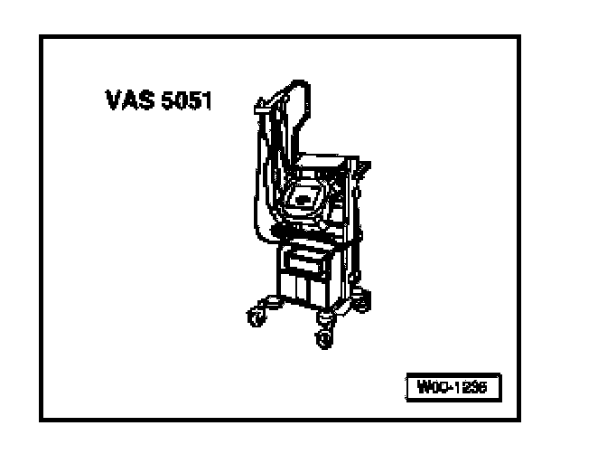

Telematics Control Module -J499-, Reconfiguring
Telematics Control Module -J499-, Reconfiguring
After replacing the Telephone/Telematics Control Module, the control module must be coded and OnStar(R) system needs to be reconfigured as described below. Have the VIN and customer details on hand.
Special tools, testers and auxiliary items needed

- VAS 5051 Vehicle Diagnostic Testing and Information System
- Optional: VAS 5052 Vehicle Diagnostic and Service System
- Cable adapter VAS 5051/5a or VAS 5051/6a
NOTE:
- DO NOT exchange Telephone/Telematics Control Modules between vehicles. Each module contains specific Station Identification (STID) and Electronic Serial Number (ESN) data unique to the VIN. This data is used by OnStar(R) and National Cellular Telephone Network to identify the vehicle and administer the customer's account.
- Failure to reconfigure the control module after replacement will prevent OnStar(R) services and features from functioning, and will result in a customer return for repair.
Prerequisite
- Telematics control module is coded.
- Where applicable, carefully record the 8 character Station Identification (STID) number and Electronic Serial Number (ESN) from labels on replacement module.
- Connect VAS VAS 5052 with adapter cable to Data Link Connector (DLC) and select mode "Guided Fault Finding"
- Enter appropriate model, equipment and model year information and press ">" to confirm.
After all Control Modules have been registered and DTC memories checked, see "Continued for all".
If the STID number and ESN DO NOT appear on labels on the new control module, proceed as follows:
- Select "Go to"
- Select "Function/Component Selection"
- Select "Body (Repair Group 01; 27; 50 to 97"
- Select "Electrical System (Repair Group 27; 90 to 97)
- Select "01-Systems capable of self-diagnosis"
- Select "Telematic NAR"
- Select "Telematic NAR functions"
- Select "Check Telematic NAR control module version".
- Record ESN and STID number from appropriate display fields.
Continued for all:
- Select "Go to"
- Select "Function/Component Selection"
- Select "Body (Repair Group 01; 27; 50 to 97"
- Select "Electrical System (Repair Group 27; 90 to 97)
- Select "01-Systems capable of self-diagnosis"
- Select "Telematic NAR"
- Select "Telematic NAR functions"
- Select "Checking and erasing Telematics NAR DTC memory"
- Switch off ignition and wait a few moments.
- Switch on ignition.
- Enter address word 75."Telematics"
- Select "Go to"
- Select "Function/Component Selection"
- Select "Body (Repair Group 01; 27; 50 to 97"
- Select "Electrical System (Repair Group 27; 90 to 97)
- Select "01-Systems capable of self-diagnosis"
- Select "Telematic NAR"
- Select "Telematic NAR functions"
- Select "Checking and erasing Telematic NAR DTC memory"
No DTCs must be present.
- Check and confirm the green Telematics indicator lamp in Telematics Control Head is on.
- Exit operating mode "Guided Fault Finding".
- Disconnect tester from DLC.
Reconfiguration
- Drive vehicle outside to area away from tall buildings, and with no overhead obstructions (trees, bridges, etc.).
- Press the blue OnStar(R) ("On ") button. A recorded introduction will be heard.
- Press the "On " button again at any time during the recording (it is not necessary to wait for the recording to finish).
- When an OnStar(R) call center advisor answers, identify yourself as an Volkswagen Technician, and that you have replaced the "Vehicle Communications Interface Unit (VCIM)".
- Supply advisor with STID number and ESN from new module. Supply the VIN and customer details if necessary. The advisor will guide you through the system reconfiguration and update of the customer's account.
- When reconfiguration is complete, end call by pressing the Communications ("DOT") button.
- Wait ten minutes and press the "On " button again to verify system operation. Inform call center advisor you are an Volkswagen Technician performing a quality check after VCIM replacement/system reconfiguration.
- End call by pressing the Communications ("DOT") button.
NOTE:
- Normal connection time is 10 - 15 seconds. However, depending on local cellular/GPS conditions, making a connection could take up to three minutes. Be patient.
- If the message: "unable to contact OnStar(R)" is heard, try relocating vehicle to a more elevated or open area and repeat connection attempts. Depending on the local cellular/GPS traffic conditions, several connection attempts may be necessary (and are normal).
- If the message: "OnStar(R) request ended" is heard, the cellular connection was interrupted before the connection was completed. Wait for a short period of time before repeating connection attempt.
- If you are still unable to connect, call OnStar(R) Customer Care at 1-888-390-4050. The advisor will verify the customer's OnStar(R) account is active.